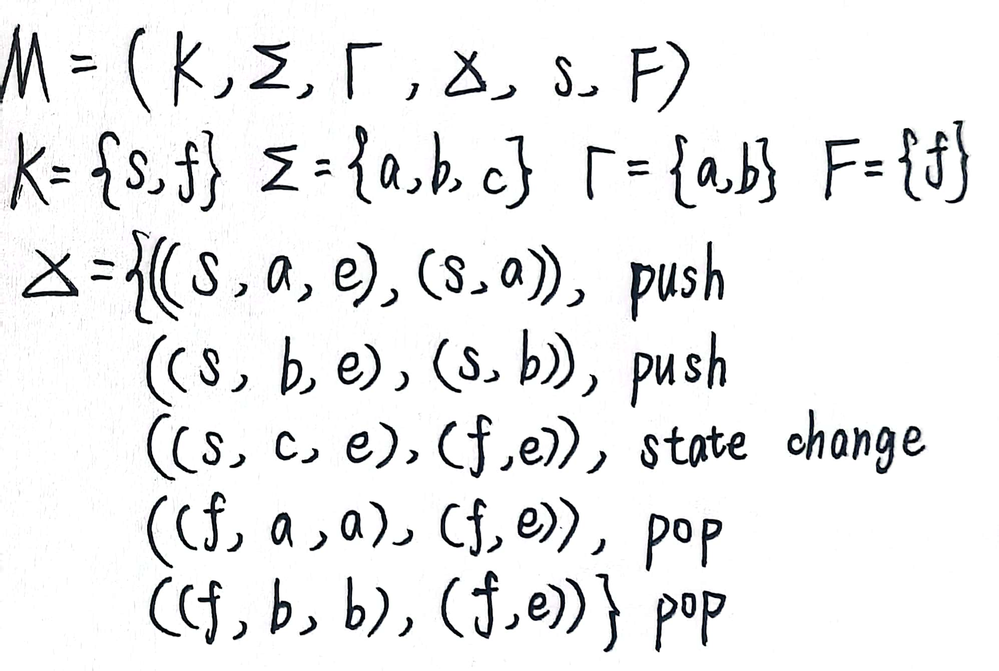
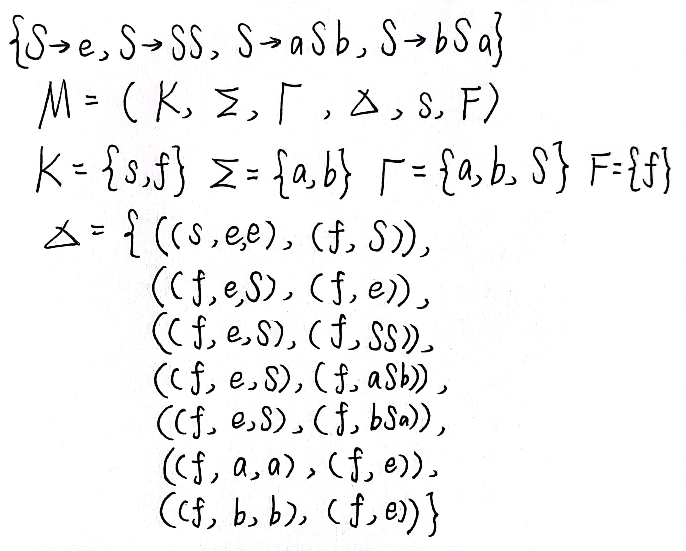
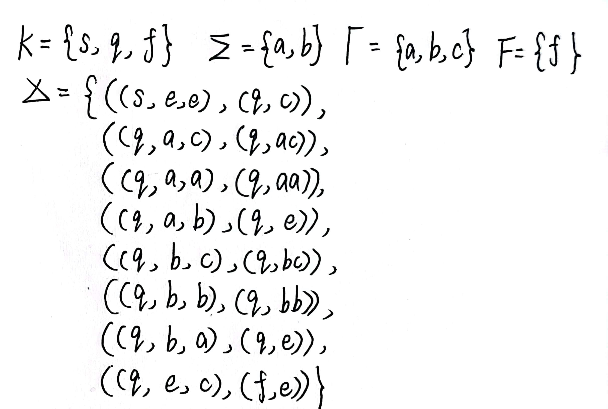

Context-Free Language
Part of note taken on ZJU Introductiion to Theoretical Computer Science, 2022 Fall & Winter
Context-Free Grammars
上下文无关文法 (context-free grammar, CFG)
上下文无关文法 (context-free grammar, CFG) 是四元组 (quadruple) \(G=(V, \Sigma, R, S)\)，其中
- \(V\): alphabet
- \(\Sigma\subseteq V\): 终结符集合
- \(S\): 起始符
- \(R\subseteq (V-\Sigma)\times V^*\): 规则 ( 有限 ) 集合
Remark
-
\(A\in V-\Sigma\) 称为非终结符 (nonterminal)，
\[ A\to _G u\iff (A, u)\in R \] -
\(\Rightarrow_G\) 表示通过 \(G\) 的一步变换。\(\forall u, v\in V^*\),
\[ u\Rightarrow_G v\iff \exists x, y\in V^*, A\in V-\Sigma \text{ s.t. } u=xAy,v=xv'y, A\to_G v' \]\(\Rightarrow_G^*\) 是其自反传递闭包。每一步都是推导 (derivation)。
-
可见 CFG \(G\) 能够产生一个语言
\[ L(G)=\{w\in\Sigma^*:\; S\Rightarrow _G^* w\} \]
当有一个 CFG 生成的 \(L(G)=L\) 时，称 \(L\) 是上下文无关语言 (context-free language, CFL)。
Examples
- \(R=\{S\to aSb,S\to e\}\)，有 \(L=\{a^nb^n:\; n\geqslant 0\}\)
- \(R=\{S\to e, S\to SS, S\to(S)\}\)，生成嵌套括号表达式 (balanced parentheses)
- \(R=\{S\to e, S\to SS, S\to aSb,S\to bSa\}\)，有 \(L(G)=\{w\in\{a, b\}^*:\; w\) 中 \(a\), \(b\) 等量 }
- 电脑程序语言很多可以用 CFG 生成
Proof
只对 3 进行证明。\(w\in L(G)\Rightarrow w\in L\) 是简单的，从 \(R\) 可以看出每一步生成的 \(a, b\) 等量。也可以选用数学归纳，归纳时只需要第一步自己走就行。
\(w\in L \Rightarrow w\in L(G)\) 还是归纳比较方便。
Basis step: \(|w|=0\)，则 \(w=e\)，\(S\to e\) 直接得到 \(w\in L(G)\)
Induction hypothesis (IH): 对 \(|w|\leqslant k\) 都成立，\(k\) 是偶数
Induction step: \(|w|\) 是偶数，所以考虑 \(|w|=k+2\)。有
\((1)w=axa\), \((2)w=axb\), \((3)w=bxa\), \((4)w=bxb\), \(|x|=k\)。
根据 IH，(2)(3) 可以直接得到 \(x\in L(G)\)，那么可以通过 \(S\Rightarrow_G aSb(bSa)\Rightarrow_G^* axb(bxa)\) 证明 \(w\in L(G)\)。
对 (1)，\(x\) 中 \(b\) 比 \(a\) 多 2 个，分解 \(x=uv\)，\(u, v\) 中都是 \(b\) 比 \(a\) 多 1 个 ( 则 \(|u|, |v|\geqslant 1\Rightarrow |u|, |v|\leqslant k-1\))。则有 \(S\Rightarrow_G^* au, S\Rightarrow_G^* va\)，故 \(S\Rightarrow_G SS\Rightarrow_G^* auva=w\)。(4) 同理。
Theorem
正则语言都是 CFL。
- 根据 3.3 的方法，可以通过 FA 是一种 PDA 证明
- 根据 3.5 的方法，可以通过基本正则语言是 CFL 的，以及 CFL 在并、连接、Kleene Star 下封闭得到
- 下面给出一种直接根据 DFA 生成对应的 CFG 的方法。
Proof
简单地，就是 ( 当前状态 ) \(\to\) ( 输入字符 )( 下一状态 )，把输入字符一个个搬到左边。正式写出来就是 CFG \(G=(V, \Sigma, R, S)\)
Parse Tree
语法树从 \(S\) 起始，中间结点为非终结符，叶子结点为终结符，叶子从左往右构成字符串。
- \(a\in\Sigma\) 本身就是语法树
- \(A\to e\) 也构成语法树
- 此外根据 \(R\) 中的规则可以伸出语法树
- 其他的都不是语法树。
语法树与推导 (derivation) 密切相关。为了导出推导的等价关系，不严格地阐述先于 (preced) 关系 (\(\prec\))，即两个推导只有中间的一步有所不同，更先的一步走的较左边的非终结符 ( 记作 \(A\))，更后的一步走的较右边的非终结符 ( 记作 \(B\))，再下一步更先的走 \(B\)、更后的走 \(A\) 恢复一致。
对 \(\prec\) 关系取自反对称传递闭包，就得到了相似 (similar) 关系。相似关系是一种等价关系，同一相似关系等价类中的推导具有相同的语法树。
每种语法树都有其最左推导 (leftmost) 和最右推导 (rightmost)，单步分别记作 \(\stackrel{L}{\Rightarrow}\) 和 \(\stackrel{R}{\Rightarrow}\)。推导得到 \(w\)，和语法树生成 \(w\)，以及存在最左或最优推导得到 \(w\)，这些都是等价的。
Remark
- \(\prec\) 不是传递的
- 一个文法被称为有歧义的 (ambiguous)，如果它的某些字符串对应两棵以上的语法树
Pushdown Automata
下推自动机 (pushdown automata, PDA)
下推自动机是六元组 (sextuple) \(M=(K, \Sigma, \Gamma, \Delta, s, F)\)，其中
- \(\Gamma\): 栈字符的 alphabet
- \(\Delta\subseteq (K\times(\Sigma\cup \{e\})\times\Gamma^*\times(K\times\Gamma^*))\): 转移关系
Remark
- PDA 是非确定性的
- 格局 \(\in K\times\Sigma^*\times\Gamma^*\)
- 同理定义 \(\vdash_M\) 和其自反传递闭包 \(\vdash_M^*\)
PDA 的接受，除了要处理完全部字符串、进入末态之外，还需要把栈清空。则 PDA \(M\) 接受的语言为
Examples
设计 PDA 以接受
- \(L=\{wcw^R:\; w\in\{a, b\}^*\}\)
- \(L=\{ww^R:\; w\in\{a, b\}^*\}\)
- \(L=\{w\in\{a, b\}^*:\; w\) 中 \(a, b\) 等量 }
Proof
- 如下图

- 将上题 \(\Sigma\) 中 \(c\) 删去，\(\Delta\) 中第三条改为 \(((s, e, e), (f, e))\) 即可
- 利用下一节的 CFG \(\to\) PDA 的方法，可以这么构造
然而直接构造可以这样这里的 \(c\) 充当栈底符的作用，即说明已经读到了栈底。由于读到 \(e\) 并不能说明已经到栈底了（即使栈里还有很多也可以读 \(e\)
） ，所以这个栈底符是必要的。
整体逻辑很清晰：第一步放入栈底符，然后不断读，过量的存入栈，读入和栈顶 ( 非 \(c\)) 不同的可以相消。这样，\(c\) 上方就只能都是 \(a\) 或都是 \(b\)。直到 \(c\) 出现在栈顶时就可以进入终结状态，当然也可以继续读输入。
显然地，只要不做任何栈操作，PDA 就是 NFA。所以 FA 就是一种 PDA。
Pushdown Automata and Context-Free Grammars
将 PDA 接受的语言和 CFL 等价起来。
CFG \(\to\) PDA
CFG \(G=(V, \Sigma, R, S)\)，\(M=(K, \Sigma, \Gamma, \Delta, s, F)\)，令
Example
\(L=\{wcw^R:\; w\in\{a, b\}^*\}\) 对应的 CFG 为 \(G=(V, \Sigma, R, S)\)，其中 \(V=\{S, a, b, c\}\), \(\Sigma=\{a, b, c\}\), \(R=\{S\to aSa, S\to bSb, S\to c\}\)
给定 \(abbcbba\)，写出推导过程和计算过程中格局的变化。
CFG \(\to\) PDA 的本质就是模拟最左推导。下面给出 \(L(G)=L(M)\) 的证明：
Proof
给出一个 claim：\(\forall w\in\Sigma^*\), \(\alpha\in (V-\Sigma)V^*\cup\{e\}\),
如果该 claim 成立，则取 \(\alpha=e\)，左侧就等价于 \(w\in L(G)\)，右侧就等价于 \(w\in L(M)\)，从而得证。于是下证该 claim。
(1) 正推基于最左推导的步数进行数学归纳。
Basis step: 推导长度为 0，\(w=e\)，\(\alpha=S\)，显然有 \((q, w, S)\vdash_M^*(q, e, \alpha)\) ( 一步都没有 )
Induction hypothesis: 对 \(n\geqslant 0\) 步以内的最左推导都成立
Induction step: 设 \(n+1\) 步的最左推导如下
设 \(u_n=xA\beta\)，其中 \(A\) 是 \(u_n\) 中最左的非终结符。再设第 \(n+1\) 步最左推导使用的是 \(R\) 中的 \(A\to \gamma\) 规则，则 \(u_{n+1}=x\gamma\beta\)。以上有 \(x\in\Sigma^*, \beta, \gamma\in V^*\)。
对 \(S\stackrel{L}{\Rightarrow}^* u_n\) 利用 IH，可知有 \((q, x, S)\vdash_M^*(q, e, A\beta)\)。利用 \(A\to \gamma\) 有
根据 \(u_{n+1}=w\alpha=x\gamma\beta\) 有 \(\exists\; y\in \Sigma^*\) s.t. \(w=xy, y\alpha=\gamma\beta\) (\(w\) 是左侧最长连续的 \(\Sigma^*\)，所以 \(x\) 一定是其前缀 )。这样就有
\(y\) 的消除利用了所构造的 \(M\) 的第三阶段规则，故完成了正推。
(2) 反推基于第二阶段 PDA 转移的次数进行数学归纳。
PDA \(\to\) CFG
整体分为 3 步：
- 定义简单 PDA
- PDA \(\to\) 简单 PDA
- 简单 PDA \(\to\) CFG
简单 PDA
如果满足如下条件，则 PDA \(M=(K, \Sigma, \Gamma, \Delta, s, F)\) 是简单 (simple) 的：
即读栈只读 1 字符，写栈长度不超过 2。但是对初始状态出发的转移不做限制。
把原有的 \(M=(K, \Sigma, \Gamma, \Delta, s, F)\) 改造为简单 PDA \(M'=(K', \Sigma, \Gamma\cup \{Z\}, \Delta', s', {f'})\)。
- 保证 \(((s', e, e), (s, Z))\in\Delta'\)，到达原起始状态并压入栈底符 \(Z\)
- 保证 \(\forall f\in F, ((f, e, Z), (f', e))\)，使每一个原终结状态都能吸收栈底符到达真正的唯一终结状态。
-
接下来考虑中间的转移改造。
- 除去读栈 \(\beta\geqslant 2\) 的转移，只需要增加中间状态分次读，每次只读 1 字符，最后一次又读 1 字符又写 \(\gamma\)。
- 除去写栈 \(\gamma\geqslant 2\) 的转移，但不引入 \(\beta\geqslant 2\) 的转移。同理分次写，每次写 1 字符。
- 除去不读栈 (\(\beta=e\)) 的转移，且不引入 \(\beta\geqslant 2, \gamma > 2\) 的转移。这里只需要增加 \(|\Gamma\cup \{Z\}|\) 个转移：
\[ ((q, a, A), (p, \gamma A)), \forall A\in\Gamma\cup \{Z\} \]即每次多读 1 个，然后写回。由于至少有一个栈底符，因此总是可读的。
综上，完成了 PDA \(\to\) simple PDA，那么接下来就是 simple PDA \(\to\) CFG。
设计的新 CFG 中的非终结符表达了一种推导进度的含义。非终结符 \(<q, A, p>\)，\(q\) 在前 \(p\) 在后，期望最后 \(q=p\) 然后可以消为 \(e\)，而初始为 \(<s, Z, f'>\) 表达最遥远的距离。而 \(A\) 是栈顶符，因为 simple PDA 的“每次读且只读栈顶符”的设计，导致只需要原状态 + 栈顶符，就可以通过遍历 \(K'\) 掌握所有可能的状态转移。
\(R\) 中的规则有四种类型：
- \(S \rightarrow\left\langle s, Z, f^{\prime}\right\rangle\): 初始压栈
- \(\langle q, B, p\rangle \rightarrow a\langle r, C, p\rangle\): 不压栈或压栈 1 字符的转移
- \(\forall ((q, a, B),(r, C))\in \Delta\), 保证 \(q, r \in K^{\prime}-\left\{s^{\prime}\right\}\)
- 可知有 \(a \in \Sigma \cup\{e\}, B \in \Gamma \cup\{Z\}\) 及 \(C \in \Gamma \cup\{Z, e\}\)
- 根据每一个这样的转移，遍历 \(p \in K^{\prime}-\left\{s^{\prime}\right\}\) 以创建此规则。
- \(\langle q, B, p\rangle \rightarrow a\left\langle r, C_1, p^{\prime}\right\rangle\left\langle p^{\prime}, C_2, p\right\rangle\): 压栈 2 字符的转移
- \(\forall \left((q, a, B),\left(r, C_1 C_2\right)\right)\in \Delta\)，同样保证 \(q, r \in K^{\prime}-\left\{s^{\prime}\right\}\)
- 可知有 \(a \in \Sigma \cup\{e\}\) 及 \(B, C_1, C_2 \in \Gamma \cup\{Z\}\)
- 根据每一个这样的转移，遍历 \(p, p^{\prime} \in K^{\prime}-\left\{s^{\prime}\right\}\) 以创建此规则
- \(\langle q, e, q\rangle \rightarrow e\): 到达叶节点，变 \(e\)
- \(\forall q \in K^{\prime}-\left\{s^{\prime}\right\}\) 添加该规则。
Remark
2、3 中在所有状态中任意选择 \(p, p'\)，这是因为不知道中间状态，所以只能由规则提供通过每个中间状态的途径，然后实际推导的时候不断模拟压栈试错，直到找出正确路径。
关于证明这样构造的 CFG 恰恰能够产生 \(L(M)\)，需要如下 claim：\(\forall q, p\in K, A\in \Gamma\cup \{e\}, x\in \Sigma^*\) 有
取 \(q=s, p=f\in F, A=e\)，那么左侧就等价于 \(x\in L(G)\)，右侧等价于 \(x\in L(M)\)。
和 CFG \(\to\) PDA 类似，基于推导步数 /PDA 转移的次数进行数学归纳就可以证明 claim。
Languages that are and are not Context-Free
Closure Properties
CFL 运算封闭性
CFL 关于并、连接、Kleene Star 封闭。
Proof
设 CFG \(G_1=(V_1, \Sigma_1, R_1, S_1), G_2=(V_2, \Sigma_2, R_2, S_2)\)。调整编码保证 \((V_1-\Sigma_1)\cap (V_2-\Sigma_2)=\emptyset\)，得到 \(G=(V, \Sigma, R, S)\)。具体构造方法类似正则表达式运算构造 FA，如下所示：
- 并：\(V=V_1 \cup V_2 \cup \{S\}\), \(\Sigma=\Sigma_1 + \Sigma_2\)
- 连接：\(V=V_1 \cup V_2 \cup \{S\}\), \(\Sigma=\Sigma_1 + \Sigma_2\)
- Kleene Star：\(V=V_1 \cup \{S\}\), \(\Sigma=\Sigma_1\)
Theorem
CFL 和正则语言的交还是 CFL。
Proof
并行模拟。PDA \(M_1=(K_1, \Sigma, \Gamma_1, \Delta_1, s_1, F_1)\), DFA \(M_2 = (K_2, \Sigma, \delta, s_2, F_2)\)，构造 PDA \(M=(K, \Sigma, \Gamma, \Delta, s, F)\):
Example
证明 \(L=\{w\in\{a, b\}^*:\; w\) 中 \(a, b\) 等量，且不含子串 \(abaa\) 或 \(babb\)} 是 CFL。
Proof
设 \(\Sigma=\{a, b\}\)。
\(L_1=\{w\in\Sigma^*:\; w\) 中 \(a, b\) 等量 } 是 CFL，
而 \(L_2=\Sigma^*-\Sigma^*(abaa\cup babb)\Sigma^*\) 是正则语言。所以 \(L=L_1\cap L_2\) 是 CFL 。
Pumping Theorem
Lemma
\(G\) 高为 \(h\) 的语法树生成的字符串长度至多为 \(\phi(G)^h\)。\(\phi(G)\) 是扇出 (Fanout)，描述 \(R\) 中推导规则右侧最大的字符数量。
数学归纳很容易就能证明这个引理。
泵定理 (Pumping Theorem)
对 CFG \(G=(V, \Sigma, R, S)\), \(\forall w\in L(G)\)，若 \(|w|>\phi(G)^{|V-\Sigma|}\)，则 \(w\) 可以表示为 \(w=uvxyz\)，满足
Proof
\(|w|>\phi(G)^{|V-\Sigma|}\)，根据 Lemma 可知语法树高度 \(>|V-\Sigma|\)，所以存在一条至少长 \(|V-\Sigma|+1\) 的路径，上面有 \(|V-\Sigma|+2\) 个结点。这 \(|V-\Sigma|+2\) 个结点中，只有叶节点是终结符，根据鸽巢原理，剩下 \(|V-\Sigma|+1\) 个结点中至少两个结点相同。语法树分割如下：
显然可看出重复 \(v, y\) 依然属于 \(L(G)\)。如果预先要求语法树是生成 \(w\) 的叶子最少的语法树（因为叶子是 \(e\) 的话不影响结果
Example
证明 \(L=\{a^nb^nc^n:\; n\geqslant 0\}\) 不是 CFL。
Example
证明 \(L=\{a^n:\; n\text{是质数}\}\) 不是 CFL。
设 \(vy=a^q, uxz=a^r\)，则要求 \(r+nq\) 总是质数，这是不现实的，如令 \(n=r+2q+2\)。
Remark
单字符 alphabet 上的 CFL 都是正则语言。
Example
\(L=\{w\in\{a, b, c\}^*\;|\;w\) 中 \(a, b, c\) 等量 } 不是 CFL，将其和 \(a^*b^*c^*\) 相交即可。
Theorem
CFL 在交和补运算下不封闭。
Proof
\(L_1=\{a^nb^n:\;n\geqslant 0\}c^*, L_2=a^*\{b^nc^n:\; n\geqslant 0\}\)，则 \(L_1\cap L_2\) 非 CFL。
对于补，考虑 \(L_1\cap L_2=\overline{\overline{L_1}\cup \overline{L_2}}\) 即可。
Algorithms for Context-Free Grammars
Theorem
- CFG \(\to\) 等价 PDA: 多项式时间
- PDA \(\to\) 等价 CFG: 多项式时间
- 给定 CFG 和 \(x\)，判定是否 \(x\in L(G)\): 多项式时间
Remark
- 没有算法可以判定两个 CFG 是否等价，或者两个 PDA 是否等价
- 正则语言不需要以上的第三个算法，因为 DFA 就是天然确定性算法。但是 CFG 只有非确定性的 PDA 对应，因此要设计确定性的算法去判定成员资格
对于这个成员资格判定问题，暴力穷举当然可以，但是是指数时间的。考虑动态规划：
- 将 \(G\) 转化为 Chomsky 范式 (Chomsky normal form, CNF)
- 针对 CNF 语法应用算法
Chomsky 范式 (CNF)
如果 \(R\subseteq (V-\Sigma)\times V^2\)，则称 CFG \(G=(V, \Sigma, R, S)\) 是 CNF。
- 要求右侧生成的不多不少是 2 个字符。
- CNF 无法生成长度小于 2 的串，但这不影响成员资格判定。
Theorem
\(\forall\) CFG \(G\)，有 CNF 下的 CFG \(G^{\prime}\text{ s.t. } L\left(G^{\prime}\right)=L(G)-\left(\sum \cup\{e\}\right)\)。
创建 \(G^{\prime}\) 的时间复杂度是关于 \(G\) 的 size 的多项式时间。
Proof
需要解决 \(R\) 中以下三种规则：
- 长规则 : \(A \rightarrow \alpha\), \(|\alpha|>2\)
- \(e\)- 规则 : \(A \rightarrow e\)
- 短规则 : \(A \rightarrow a\) 或 \(A \rightarrow B\)
分别进行处理：
- 切断长规则 \(A\to B_1B_2\cdots B_n\in R, n\geqslant 3\)。得到 \(n-1\) 条规则：
- 除去 \(e\)- 规则，定义 \(\mathcal{E}=\{A\in V-\Sigma:\; A\Rightarrow ^* e\}\)，即能导出 \(e\) 的非终结符集合
其实算法和计算 NFA 转 DFA 的 \(E(p)\) 是一样的。计算完 \(\mathcal{E}\) 之后，对推导得到 \(\mathcal{E}\) 中元素的规则需要进行替换，如下所示：
注意总有 \(A\in \mathcal{D}(A)\)，若 \(a\in \Sigma\)，则 \(\mathcal{D}(a)=\{a\}\)。
接下来的操作 PPT 上不够全面，采纳课本的说法。
先计算全部 \(\mathcal{D}(A)\)，再删去所有短规则。然后剩下的就都是 \(A\to BC\) 规则了，全部替换为 \(A\to B'C'\) 规则，其中 \(B'\in \mathcal{D}(B), C'\in \mathcal{D}(C)\)。这里就模拟了 \(B\) 产生 \(B'\) 以及 \(C\) 产生 \(C'\) 的一系列短规则的效果。
最后还有一条特殊的，回过头再看每一条 \(A\to BC\)，如果 \(A\in \mathcal{D}(S)-\{S\}\)，就添加规则 \(S\to BC\)。
Example
\(R=\{S\to SS, S\to (S), S\to e\}\)，转换对应的 CFG 为 CNF。
最后给出动态规划算法。定义能够推导出 \(x_i\cdots x_{i+s}\) 的字符集
| 判定是否有 x in L(G) | |
|---|---|
先计算能推导出长度为 \(2\) 的字符集，然后 \(3\) ……最后算出长度为 \(n\) 的字符集。每一长度下，移动区间起点一一计算，每一区间都遍历所有的分割方式。
Example
继续上个 example 计算的 CNF，判定是否有 \((()(()))\in L(G)\)?
计算时从对角线开始，向左下角慢慢计算。根据最左下角的 \(S\)，判定属于。